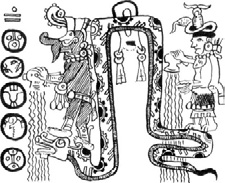
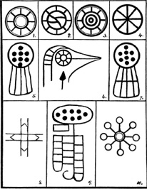

VIII. BÖLÜM
İNSANOĞLUNUN İLK DİNİ
Sorulabilecek en ilginç sorulardan biri şu: İnsan, dini ilk olarak nasıl öğrendi ve bu nasıl bir dindi? Sorunun yanıtını ise antik tarih veriyor.
Genellikle ilkel insanın aklı, özel bir eğitime tabi tutulmadan “sonsuz”, “ebedi”, “yüce” gibi kavramları anlayamayacak kadar bilgisiz bir durumdaydı. İnsanın böyle kavramları anlamasını sağlamak için ona ilk önce bir Tanrı’nın varlığı, sonra cennet; kendisinin ölmeyen, sonsuz bir ruha sahip olduğu ve Tanrı’nın birçok niteliğe sahip, kadir ve ebedi olduğu öğretildi. Daha sonra Tanrı’yı, onun niteliklerinden her birini ve cenneti temsil eden; bu ilkel insanın kavrayabileceği semboller seçildi. Böylece, modern Hristiyanlık da dahil olmak üzere tüm dinlerin içine işlemiş bulunan sembolik anlatımlara sahip birçok panteonun temeli atılmış oldu.
Sembollerin en ilkel formları çizgiler ve geometrik şekillerdi. Başlangıçta bu semboller az sayıdaydı; fakat zaman geçtikçe sayıları da karmaşıklıkları da arttı. Mısırlılar döneminde o kadar çok ve karmaşık semboller bulunuyordu ki, Mısır rahiplerinin yarısı bile bunların tamamını anlayamıyordu.
Yazılarında Hermes Trismegistus şöyle diyor: “Ah, Mısır! Mısır! Tüm inancından geriye, müritlerinin dininden anlayabildikleri masallardan başka bir şey kalmayacak. Dindarca işlerinin öyküsünü yalnızca taşlara kazınmış kelimeler anlatacak. Güzel topraklarında İskitler, İndüs halkı veya başka barbarlar yaşayacak.”
Musa, Osiris dininin bir uzantısı olarak tek Tanrıcılığın temellerini attı; fakat öğretilerinde bu dinin sembolleri kullanmayı sürdürdü. Aslına bakılırsa bu sembollerin bazıları hâlâ Yahudi sinagoglarında görülebilir.
İsa’nın öğretileri hep atasözleri şeklindeydi. Kendisi özellikle bu şekilde vaaz verdiğini, çünkü insanların anlamalarını sağlamalarının tek yolunun bu olduğunu beyan etmişti. Atasözleri dilsel sembollerdir.
Max Müller şöyle yazıyor: “İlkel insanın düşünce ve duyguları hakkında en ufak bir fikre sahip olduğumuz andan itibaren, onun bir dine; bir inanç veya ibadet, ahlak veya mutluluk dinine; Yüce Tanrı’ya karşı duyulan korkuyu, umudu, şüpheyi veya saygıyı çeşitli semboller aracılığıyla anlatan bir dine sahip olduğunu görüyoruz.”
İlkel insan bir sembol kullandığında, bu onun gözünün önündeki nesneyi değil, aklında temsil ettiklerini anlatıyordu. Bu ilkel ve antik gelenek bize yakın olmayı sürdürüyor. Hâlâ, örneğin İsa’yı temsil eden haç gibi semboller kullanıyoruz.
Uxmal, Yucatan’daki Kutsal Gizemler Tapınağı’nın duvarlarındaki semboller bu çalışmayla ilgili olmaları nedeniyle büyük önem taşıyor. Tapınak duvarlarındaki bir yazıt bize bunların doğrudan doğruya kaynaktan, yani insanoğlunun anayurdu olan Batı Toprakları’ndan geldiğini anlatıyor. Dolayısıyla bu sembollerin, insanoğlunun ilk dini öğretisinde kullanılanlarla aynı oldukları sonucuna kolaylıkla varabiliriz. Sembollerin birçoğunun aynı zamanda Güney Denizi Adaları harabelerinde taşların üzerine kazınmış hâlde bulunmuş olmaları da bu ifadeyi doğruluyor. Bu semboller, dünyanın her yerindeki insanlar ile insanoğlunun anayurdu “Kui Diyarı” Mu arasında bir bağ.
Daha önce de belirtildiği gibi, Güney Denizi Adaları’ndaki harabeler arasında bu tür sayısız sembole rastlamak mümkün. Duvarları hâlâ ayakta duruyor olsaydı her yanlarının bu sembollerle süslü olacağından şüphem yok, çünkü bu tapınak ve kalıntılar insanoğlunun ilk dünyevi yuvasının sınırları içerisindeydi.
Karmaşık kozmogonik şekillerin, insan aklı bunları kavrayabilecek kadar geliştikten sonra ortaya çıkmış olabileceklerine okuyucunun dikkat etmesi gerekli. İlkel insana çemberin sonsuzluğu temsil ettiğinin öğretilmesiyle, onun gelişmiş zihninin ayrıntılı ve karmaşık kozmogonik diyagramları çözebilecek hâle gelmesi arasında muhtemelen binlerce yıl vardı. Dolayısıyla on binlerce yıl önce insan zihninin, böylesine karmaşık sembolik problemleri çözebilecek kadar ileri olduğunu görüyoruz.
Bu sembollerin geniş kapsamları ve ortak anlamları, ortak bir kaynağa sahip olduklarını kanıtlıyor. Yucatan’daki kayıtlar bunların Mu Ülkesi’nden geldiğini gösteriyor. Mısır belgeleri bunların kaynağının Batı Toprakları olduğunu; Hindistan ve diğer doğu ülkelerindekiler de “doğudaki anayurttan” geldiklerini anlatıyor.
Sonuç olarak, şu baskın gerçeğin okuyucunun aklında kesin olarak yer etmesini sağladığımı düşünüyorum: Mu Ülkesi, Batı Toprakları, Kui Diyarı ve Kitabı Mukaddes’teki Cennet Bahçesi aynı yer.
Bu kısımda kökenlerini ve özgün anlamlarını da vererek birçok antik kutsal sembol göstereceğim. Bu semboller özellikle Masonlar için dikkat çekici, çünkü yalnızca Masonluğun kökenini açıklamakla kalmıyor, aynı zamanda ne kadar eskiye dayandığını da gözler önüne seriyor.
Şimdiye dek bu kardeşliğin kökenine hiç inilememişti. İzi M.Ö. 500’de Mısır’a kadar takip edilebiliyordu, fakat Mısırlıların bunu nasıl edindiği sorusu hiç cevaplanmamıştı. Bu, dinin tarihinde hiç okunmamış bir sayfa ve bu bölüm, bu sayfayı çevirecek. Masonluğun kökeninin Mısır’a dayandığı ve seremonilerinde kullanılan sembollerin Mısır kaynaklı olduğu düşünülür. Bu bir hata. Günümüzde Masonluk olarak bilinen organizasyonun kaynağını bulmak için, insan ayağının Mısır toprağını arşınladığı zamandan on binlerce yıl geriye bakmamız gerekiyor.
Eğer gök cisimlerinin hareketlerine dayanan hesaplamalara güvenirsek, 70 bin yıldan uzun süre önce Naacaller (Kutsal Kardeşler) tarafından dünyaya yayılmış bulunan Mu kolonilerine taşınmış olan anayurdun kutsal metinleri, Masonluğun kökenine dair en eski yazılı belge. Bu kardeşliğin müthiş yaşı yalnızca Kutsal Metinler ile değil; çeşitli doğu yazıları, kitabe ve antik tapınaklarıyla da ortaya koyuluyor ve Niven’in, bazıları 12 bin yıldan daha eski olan Meksika Taş Tabletleri’yle de kesin biçimde kanıtlanıyor.
Bu sözü geçen kayıtlar yığını günümüz Masonluğunun, insanoğlunun ilk dininin; insanın Kutsal Baba’sına olan ibadet ve bağlılığının ilk ifadesinin kalıntıları olduğunu şüpheye yer bırakmayacak biçimde ortaya koyuyor. Bu dinin temeli Yaratıcı’ya, Kutsal Baba olarak duyulan sevgi ve aşkla, tüm insanoğluna kardeşler olarak duyulan sevgiydi. İnsanın bu ilk dini, İlahi Sonsuzluğa ibadetin dünya üzerinde öğretilmiş ve uygulanmış en yalın en saf hâliydi. Bu, yalnızca bir Yaratıcı’ya ibadet edilmesinden dolayı tek Tanrıcı bir dindi. Tanrı, her biri farklı bir sembolle ifade edilen birçok niteliğe sahipti. Aynı zamanda, tüm seremonilerde Lahun sembolü kullanıldığı için, birden fazla Yaratıcı veya Tanrı olduğu izlenimi yaratmamaya büyük özen gösteriliyordu. Lahun’un anlamı “İkisi Bir de” veya “Hepsi Birde”dir.
Temelde Tanrı imgesinin geçmişteki ve günümüzdeki hâlleri arasında hiçbir fark yoktur. Eskiler ona birçok nitelik verip bunları tek tek ele alıyorlardı. Biz de ona birçok nitelik veriyor ama bunları “Her şey Tanrı’dan gelir” diyerek bir arada değerlendiriyoruz. Dolayısıyla tek fark söyleyişte yatıyor. İnsanoğlunun bu ilk dininin kalıntıları anayurdun batışından beri, yaklaşık 12 bin yıl boyunca nesilden nesle sözlü olarak aktarıldı. Bu parçalar, bizden öncekiler tarafından doğruluk ve sadakatle devredildi.
Kutsal Metinler’de Mason üstatların dikkatini özellikle çekmek istediğim bir bölüm var. Şöyle yazıyor: “İnsan için Yaratıcı anlaşılmazdır ve bu sebeple o ne resimlendirilebilir, ne de adlandırılabilir. O, İsimsiz’dir.”
Bu kısım Naga nüshasından alıntı.
Lao Tzu, M.Ö. 604: “Kelimelerle ifade edilebilen Tao, ebedi Tao değildir. Dile getirilebilen ad, onun ebedi adı değildir. Adı olmayan O, cennetin ve dünyanın başlangıcıdır. O, İsimsiz’dir.”
Antik hiyeratik rakam yazılarında 10 sayısı Yaratıcı’yı simgeliyordu. Bu sayı asla söylenmiyor yazılmıyordu. 10 sayısını dile getirmek, yazmak veya kazımak günahkârlık sayılıyordu. Zorunlu hallerde bunun yerine Lahun sembolü kullanılıyordu.
Çember 1a: Çember insanın dini öğretilerinde kullanılmış ilk üç sembolden biriydi. Bu, Ra adı verilen güneş’in bir resmi ve Tanrı’nın tüm niteliklerinin tek Tanrıcı veya kolektif sembolüydü. Güneş Ra asla Tanrı’nın kendisi olarak görülmüyor, ona yalnızca bir sembol gözüyle bakılıyordu. İbadet edilen Tanrı’ydı ve sembol yalnızca onu temsilen kullanılıyordu.
Tanrı’ya duyulan huşu öylesine büyüktü ki onun adı asla ağza alınmıyordu. Mayalar, Hintliler, Uygurlar ve diğer tüm antik halklar Tanrı’dan “İsimsiz” şeklinde bahsediyordu. Çemberin bir başlangıcı veya sonu yoktur. Bilgisiz bir akla sonsuzluğu ve ebediliği öğretecek daha mükemmel bir sembol bulmak mümkün olabilir miydi?
Görünüşe bakılırsa Tanrı’nın simgesi olarak güneşin seçilmesinin nedeni, bunun ilkel insanın gözüyle görüp kavrayabildiği en güçlü nesne olmasıydı. Bu sebeple, Kadir Olan’ı iyi temsil ediyordu.
Güneş sembolü, Polinezya harabelerindeki taşlar üzerinde, Gizemli Sırlar Tapınağı’nın duvarlarında, Mısır’da, Babil’de, Peru’da ve tüm antik toprak ve ülkelerde bulunuyor. Bu, evrensel bir simgeydi.
En eski semboller
Şekil 1b: Tanrı’yı temsil eden tüm sembollerde, başları taçlandıran bir disk -Güneş Ra’nın bir resmi- bulunur.
Şekil 1c: Ölenlerin hatırasına dikilen sütunların ve heykellerin üzerinde çoğu zaman kızıl bir küre bulunurdu.
Paskalya Adası’ndaki heykellerin başlarında bulunan kızıl küreler de bu kullanımın örnekleri. Bunlar, Güneş Ra’yı temsil ediyor. Eskiler kızıl küreyi, günümüzde Hristiyanların haçı kullandıklarına benzer şekilde kullanırlardı.
Anana Papirüsü: Şimdi yazılacaklar M.Ö. 1320’ye ait, Anana tarafından yazılmış bir Mısır papirüsünden alıntıdır.
Anana, Firavun II. Seti’nin başkatibi ve danışmanıydı.
“Bak! Bu parşömende yazmıyor mu? Oku, daha doğmamış günleri bulacaksın, eğer tanrıların sana bu yeteneği bahşettiyse. Oku, geleceğin evladı; oku ve sana çok uzak gelen ama aslında sana çok yakın olan o geçmişin sırlarını öğren.”
“Bir kez yaşayıp sonsuza dek göçüp gitmez insan. Birçok yerde, birçok kez yaşar, hep bu dünyada olmasa da. Bu yaşamların arasındaysa bir karanlık perdesi vardır.”
“Sonunda kapılar açılacak ve bize, başlangıçtan beri ayaklarımızın dolaştığı salonlar gösterilecek.”
“Dinimiz bize ebediyen yaşayacağımızı öğretir. Sonu olmadığı için başı olmayan ebediyet, bir çemberdir. Biri doğruysa, ebediyete kadar yaşayacaksak; diğeri de ezelden beri yaşadığımız da doğru olmalı.”
“İlk zamanlarda rahipler; insanın düşüncesini taştan bloklara hapsedip bunlardan bin Tanrı’ya mabetler inşa etmeden önce, birçoğu bu fikrin doğru olduğunu düşündü. Çünkü o zaman yalnızca tek Tanrı olduğunu biliyorlardı.”
“İnsanların gözünde Tanrı’nın birçok yüzü vardır; yine de herkes kendi gördüğünün gerçek Tanrı olduğuna yemin eder. Yine de hepsi yanılır, çünkü hepsi haklıdır.”
“Kas’ımız, gizli benliğimiz, kendini bize bunları şekillerde gösterir. Her insanın varlığında saklı olan sonsuz bilgelik kuyusundan çekerek bir anlık da olsa gerçeğe bakmamızı sağlar, seçilmiş olanlarımıza mucizeler yaratma gücünü bahşettiği gibi.”
“Ne ruh bedenle yargılanmalıdır, ne de tanrı barındığı eviyle.”
“Mısırlılar arasında Scarab (bok böceği-kutsal böcek) bir tanrı değil, Yaratıcı’nın bir sembolüdür, çünkü o ayakları arasında bir çamur topu yuvarlar ve içine yumurtasını bırakır. Tıpkı Yaratıcı’nın yuvarlak görünen dünyayı yuvarlaması ve yaşamın yaratılmasını sağlaması gibi.”
“Tüm tanrılar dünyaya sevgi hediyesini bahşederler, bu olmazsa dünya da var olmaz. İnancım bana senin inancından daha açık söylüyor belki bunu: Yaşam ölümle bitmez ve yaşamın ruhu olan sevgi, ruh varlığını sürdürdükçe yaşamalıdır.”
“Bu görünmez bağın gücü, dünya ölüp gittikten sonra bile iki ruhu bir araya getirmeyi sürdürecek.”
“Eğer çok sevdiğin birini kaybedersen huzurlu ol. Ölüm, onu uykuya yatıran bir dadı yalnızca, başka bir şey değil. Ve sabah olduğunda o, başlangıçtan beri kendisine eşlik edenlerle birlikte farklı bir günde yolculuk etmek için yeniden uyanacak.”
Yine Anana tarafından yazılmış M.Ö. 1320 tarihli başka bir papirüsten:
“Ebediyetin sonu yoktur, dolayısıyla başlangıcı da. İşte bu yüzden ebediyet bir çemberdir.”
“Eğer yaşamayı sürdürüyorsak, buna sonsuza dek devam edeceğiz ve eğer sonsuza dek devam ediyorsak, tıpkı çember ve sonsuzluk gibi, insanın da bir başlangıcı yok demektir.”
“İnsan defalarca doğar fakat geçmiş hayatları hakkında hiçbir şey bilmez, ona bir hayal veya düşüncenin önceki hayatlarından birinden bir olayı hatırlattığı anlar dışında. Bu olayın ne zaman veya nerede gerçekleştiğini anlayamaz, sadece tanıdık olduğunu bilir. Yine de sonunda tüm geçmiş yaşamları ortaya çıkacaktır.”
“Bir yaşama ait öz veya ruhlar başka bir yaşamda yeniden karşılaşabilir ve tıpkı bir mıknatıs gibi birbirlerini çekebilirler, bunun neden olduğunu bilmeseler de.”
İsa şöyle diyor: “Yeniden doğmadıkça, Tanrı’nın krallığına giremezsin.”
Mısır Papirüsü: “Evet, ruhların Güneş Ra’dan, yıldızlardan daha uzun yaşayabileceklerine inanıyorum.” Ruhun güneşten uzun yaşayabileceğine inanılıyor olması; güneşin, Tanrı’nın yalnızca bir sembolü olduğunu açıkça gösteriyor.
Eşkenar Üçgen, Şekil 2: Eşkenar üçgenin kökeni ve anlamı son derece ilginç. Eşkenar üçgen, ilk insanın dini eğitimi için tasarlanmış ilk üç sembolden biri. Tarihi 50 bin yıl önceye dayanıyor. Bu sembol hem bir üçlemeyi hem de cenneti temsil etmek üzere tasarlanmıştı. Efsaneye göre sembolün kökeni, Batı Toprakları olarak anılan üç ayrı kara parçasından oluşan anayurdun coğrafi düzenine dayanıyordu. Efsaneye göre bu kara parçaları birbirlerini takip eden farklı zamanlarda ortaya çıkmıştı. O zamanın insanlarının büyük çoğunluğunun sahip olduğu gelişmemiş akla bunu öğretebilmek için, bu üç kara parçasının oluşumunda Yaratıcı’nın üç farklı niteliğinin görev aldığını, fakat yalnızca tek Yaratıcı bulunduğu anlatılmıştı.
Eşkenar üçgen görsel bir sembol olarak, insanın Üçlü Tanrı kavramını görüp anlayabilmesi amacıyla seçilmişti. İlk Üçleme’yi oluşturan bu özellikler Teslis’in de kaynağıydı. Zamanın tüm bu çağları boyunca kullandığımız bu kavram, asla yok olmayacak olsa da çağdan çağa farklı bir şekil kazandı ve değişik halklar arasında değişik isim ve kılıklara büründü.
Eşkenar üçgen, Teslis’in yanı sıra Cennet’i simgelemek için de kullanılıyordu. Üçgen, Üçlü Tanrılığı temsil ettiği ve Cennet de Tanrı’nın evi olduğu için, Tanrı’nın olduğu yerin Cennet olduğu sonucu kendiliğinden geldi.
Kare, Şekil 3: Kare, insanın dini öğretilerinde kullanılan ilk üç sembolün üçüncüsü. Dünyayı temsil ediyordu. Dört köşesi dört ana yönü; kuzey, güney, doğu ve batıyı simgeliyordu. Her köşeye bir koruyucu atanmıştı. Dünyanın “dört köşesi” olduğu düşüncesi ilk insanlardan bize kalan bir kavram. Biz de zaman zaman “dünyanın dört bucağı” demiyor muyuz? Bu üç kutsal sembolün her biri, Güney Denizi Adaları harabelerinin taşlarına kazınmış durumda ve tüm antik halkların kültürlerinde bulunuyor. Bu semboller evrenseldi.
Böylece ilk Kutsal Sembollerin listesi tamamlanıyor. Sırada bu üçünün bir arada kullanılmasıyla oluşturulmuş bileşik semboller var. Zaman geçtikçe Kutsal Semboller daha karmaşık bir hâl alarak, sonunda o zamanki dini kavramların tümünü temsil eden Kozmogonik Diyagramlara dönüştü.
Üç Yıldızlı Üçgen, Şekil 4: İçinde üç yıldız bulunan eşkenar üçgen, cenneti ve içindeki Üçlü Tanrı’yı temsil ediyor. Değişik halkların Tek Tanrı’yı oluşturan üç niteliğe verdikleri değişik adlar vardı. Bu yalnızca dilsel bir farklılıktı.
Beş Yıldızlı Üçgen, Şekil 5: İçinde beş yıldız bulunan eşkenar üçgen, Yaratıcı’dan ve onun emriyle evrendeki kaostan kuralları ve düzeni oluşturup her şeyi yaratan Dört Büyük Temel Kuvvet’ten oluşan Beşli Tanrısallığı simgeliyor.
Kare Üzerinde Üçgen, Şekil 6: Bu, 2. ve 3. şekillerden oluşmuş bileşik bir sembol ve anlamı “Dünyanın üzerindeki cennet” hâlâ kullandığımız çok eski bir kavram. “Üzerindeki” sözü yükseklikle ilgili, “daha üstün bir varoluş seviyesi” anlamına geliyor.
Kare Üzerinde Üç Yıldızlı Üçgen, Şekil 7: Bu, 3. ve 4. şekillerin bir bileşkesi. Bu sembol Uxmal’daki Kutsal Sırlar Tapınağı’nın kabul odası olan Kuzey Odası’nın sonunda bulunuyor.
Kare Üzerinde Beş Yıldızlı Üçgen, Şekil 8: Bu, 3. ve 5. şekillerin bir bileşkesi. Uxmal’daki Kutsal Sırlar Tapınağı’nın yükseliş salonu olan Güney Odası’nın sonunda bulunuyor. Yeni üye, Üçlü Tanrı’nın sırlarını öğrenip Beşli Tanrısallığın gizemlerini öğrenmeye başladığı kabul odasından Güney Odası’na geçerdi. Böylece sırasıyla Merkez Oda’ya ve bir usta ve üstat olacağı Kutsallar Kutsalı odasına girmeye hak kazanırdı.
Yeniden çembere dönüyoruz. Çok erken zamanlarda yalın çemberin Yaratıcı dışında anlamlar için de kullanıldığını görülüyor; yani insanın tarihinin belirli bir döneminde eskiler Yaratıcı’yı simgelemek için çemberin çeşitli varyasyonlarını kullanıyorlardı.
Şekil 9: Merkezinde bir nokta bulunan çember, Yaratıcı’nın sembolünün Naga veya Güney tasarımıydı.
Şekil 10: Merkezinde bir göz bulunan çember, sınırlı düzeyde de olsa, tüm antik halklar tarafından kullanılıyordu.
Antik Kutsal Semboller
Şekil 11: İç içe geçmiş iki çember, bir Uygur veya Kuzey tasarımıydı. Ariler yani Uygurlar, Kuzey Hindistan’a sızdıklarında Uygur sembollerini de beraberlerinde getirdiler. Öyle ki, birçok Ari’nin Hindistan’a yerleşmesinin ardından, Uygur sembollerinin de Naga benzerleri kadar sık kullanılmaya başlandığını görüyoruz. Sembolün Uygur formu, Hindistan’dan giden insanlar sayesinde alt koloniler olan Babil ve Mısır’a da ulaştı.
Tau (Şekil 12-Sayfa 165): Tau semboller arasından yalnızca en ilginci değil, aynı zamanda en eskilerden biri. Anayurdun ilk yazılarından olan “Kutsal İlhamlı Metinler”de bulunuyor. Hem dirilişi hem de sudan çıkışı simgeliyor. Tau, Güneyhaçı Takımyıldızı’nın bir resmi. Dirilişin sembolü olarak kullanılmasının sebebi şu: Güneyhaçı, Mu’nun göklerinde belirli bir açıda ortaya çıktığında, beklenen yağmurları da beraberinde getiriyordu. Yağmurla topraktaki tohumlar hayat buluyor, boynunu bükmüş bitkiler tazelenerek çiçek ve meyvelerin yetişeceği yeni sürgünlerini uzatıyordu. Böylece Mu’da bir bolluk ve sevinç zamanı başlıyordu, çünkü yaşam yeniden doğmuştu.
Sudan çıkışın sembolü olarak hem Hindistan’daki Naacal Metinleri’nde hem de Niven’in 18 Numaralı Tableti’nde önemli bir yere sahip. Her iki durumda da anayurt Mu’nun sudan çıkışını simgeliyor. Tau, eski Maya metinlerinde büyük yere sahip ve genellikle, üzerinde çiçek ve meyveler olan iki dallı bir ağaç şeklinde resmediliyor.
Tau, Bir Maya Elyazmasından
Maya Deseni (British Museum No. 9789): Bu desen, British Museum’da bulunan bir Maya Elyazması’nda yer alıyor ve Yucatan’a düşen yağmuru gösteriyor. Üzerindeki figürler alegorik ve Mayax’ın kısımlarını temsil ediyor.
Troano Elyazması: Bu, Mayax’a yağmur mevsiminin dönüşünü betimliyor. Tau, evrensel bir semboldü. Hint, Çin, Kalde, İnka, Quiche, Mısır ve diğer antik halkların yazılarında bulunuyor. Antik dinlerde önemli bir yere sahip. Meyve ve çiçeklerin adak olarak sunulduğu tapınak sunakları, Tau şeklinde yapılıyordu. Bu sembolün adı ve okunuşu hiç değişmedi. Anayurtta da T-a-u idi ve şimdi de bizim kullandığımız şekli de T-a-u.
Anayurtta kelimenin her harfi seslendiriliyordu; “a”nın
okunuşu “ah” ve “u”nun okunuşu “oo” idi. Bu şekilde okunuşu Tâ-û olarak bulunuyor. Polinezyalılar bunu hâlâ doğru biçimde telaffuz ediyorlar.
İki Kenarlı Kare (Şekil 13, sayfa 165): İki kenarlı kare Masonluğun en dikkat çeken sembollerinden biri; aşırı derecede eski tarihi, insanoğlunun ilk dini emirleri aldığı zamanlara dayanıyor. Bu ne zaman gerçekleşmişti? Bunun cevabını veremem, hatta tahmin bile yürütemem.

Yağmur Mevsiminin Dönüşü, Troano Elyazması’ndan
Biri Hindistan’da, diğeri Tibet’te bulunan iki çok eski Naacal Tableti’nde, insanoğlunun yaklaşık 200 bin yıl önce Mu Ülkesi’nde ortaya çıktığı anlatılıyor. Başka Naacal metinlerinden anlaşıldığı kadarıylaysa dini öğretilerin başlangıcı, insanın ortaya çıkışından çok ileriye dayanmıyor. Peki çok ileri, ne kadar çok? Bunu öğrenmek veya tahmin etmek mümkün değil; dolayısıyla kader cevabın öğrenilmesini buyurana kadar bu soru cevapsız kalacak. Ama bunu nasıl değerlendirirsek değerlendirelim, aradaki zaman bin yıl veya on binlerce yıl bile olsa, iki kenarlı karenin aşırı eski tarihi açıkça belli oluyor; dolayısıyla şimdi Masonluk adı verilen cemiyetin de.
Meksika İki Kenarlı Kareleri
İki kenarlı kare, “Yapıcı” anlamına gelen antik bir kelimenin yazılışıdır.
Dini öğretilerde Büyük Temel Kuvvetler, çoğu zaman Yapıcılar -Evrenin ve içindeki her şeyin Yapıcıları- olarak adlandırılıyordu. Niven’in Meksika Taş Tabletleri arasında, içinde iki kenarlı kare motifini bulunduran yüzlerce yazı var. Bu tabletlerden 16’lık bir plakayı; 963, 900, 925, 1315, 237, 385, 1825, 1827, 659, 236, 1354, 446, 716, 908 ve 1004 numaraları örnek olarak veriyorum. Bunlar Niven’in verdiği numaralar; kendisi tabletleri bulduğu sırayla numaralamıştı.
İki kenarlı kare, Mısır Kozmogonisi’nde her zaman belirgin olmuştur. Mısır metinlerinde bu şekle rastladığım en erken tarih, Menes zamanına (yaklaşık M.Ö. 5000) ait. Buna rağmen, bu şekle 12 bin yıldan daha uzun süre önce Amerika’da oldukça sık rastlandığını görüyoruz, yani Mısır’dan binlerce yıl önce. 12 bin yıl önce Amerika’da bulunan hâli bile çok eski, çünkü bu şekle 50 bin yıl önceye ait olan Naacal Tabletleri’nde de rastlanıyor.
İki kenarlı kare, Tanrı Ptah’ın sembollerinden biriydi. Ptah, en eski Mısır tanrılarından biri. Ptah’ın birçok unvanı var, bunlardan biri de “Yapıcı.” İki kenarlı kare Mısır’da “Osiris’in Mührü” olarak önem kazandı. Amenti’deki Büyük Hakikat Salonu’nda ölülerin ruhlarını yargılayan Osiris, iki kenarlı bir kare üzerine oturur hâlde gösteriliyor.
British Museum’daki Anana Papirüsü’nden gösterdiğim bu parçada Hakikat ve Adalet Tanrıçası Maat da iki kenarlı bir kare üzerine oturur hâlde resmedilmiş. Altta da yine iki kenarlı kare üzerine oturmuş Osiris görülüyor.
Ka, Şekil 14: Masonlar tarafından iyi bilinen bu sembol, Uxmal’daki Kutsal Sırlar Tapınağı’nda, Kutsallar Kutsalı Odası’nın girişinin üst pervazında bulunuyor. Pervazda bu şekil birçok kez tekrarlanmış. Faniliğin bu sembolleri, antik dini seremonilerde müride sonunun ne olacağını göstermek ve öte dünyaya geçmek üzere ölümlü bedenini terk edecek olan ruhunun acı çekmesine neden olmayacak bir hayat yaşamanın gerekliliğini ona iyice öğretmek için kullanılıyordu.
Mısır, Maya’nın bir yansıması; dolayısıyla Mısır sayesinde orijinal seremonileri de öğrenebiliriz. Büyük Piramit Tapınağı’nda, kenarlarında fanilik sembolleri dizili bir lahit bulunuyordu. Mürit, dünyevi varlığının bu sembolleri üzerinde düşünmesi için bu lahitin içine yerleştiriliyor ve lahitten çıktığında, kendisine ruhu bedenini terk ettikten sonra onu bekleyen başka bir hayat olduğu hatırlatılıyordu.
Merkezi Figürlü Üçgenler, Şekil 15 ve 16: Bu iki sembol aslında cennetten dünyayı izleyen “Her Şeyi Gören Göz”ü temsil ediyordu. Mısırlılar bunu değiştirerek cennetten dünyayı izleyen Osiris’in Her Şeyi Gören Gözü hâline getirdiler.
İç İçe Geçmiş Üçgenler, Şekil 17: Etrafları bir çemberle çevrili, iç içe geçmiş iki üçgen. Bu sembol, merkezini oluşturduğu anayurdun Kozmik Diyagramı bölümünde parçalara ayrılıp deşifre edilecek.
Şekil 18: Bu sembolün şaşırtıcı yanı, dıştaki iki üçgenin içerisinde Hindu Kozmik Diyagramı Sri Santara’da ve güneybatı eyaletlerimizdeki Pueblo Kızılderililerinde de görüldüğü gibi, yine iç içe geçmiş iki üçgen bulundurması.
Şekil 19: Burada merkezi şekil yalın bir haç, yani Kutsal Dörtlü’nün asıl sembolü. Bu şekle Babil Kozmik Diyagramı’nda rastlanıyor.
Çift Üçgen, Şekil 20: Tabanlarından bağlı iki çift üçgen, antik bir adak sembolüydü. Bu sembol sıklıkla tapınaklardaki adalet sunaklarının kolları altında görülebilir.
Büyük Y, Şekil 21: Baba tarafından ataları olan Uygurların bilimini ve dini kavramlarını alan Çinliler Konfüçyüs zamanında eşkenar üçgeni bu Y sembolüyle değiştirdiler. Bu sembole “Büyük Koşul”, “Büyük Birlik” ve “Büyük Y” adını verdiler. “Y’nin ne bedeni, ne de şekli vardır. Bedeni ve şekli olan her şey, şekilsiz olan tarafından yaratılmıştır. Büyük Koşul veya Büyük Birlik, Üç’ü anlatır. Bir, üçtür ve üç, tektir.”

Cennet’e Giden Sekiz Yol
Tüyler: Başlangıçtan beri tüyler sembolizmde önemli bir yer tutmuştur. Tüy, anayurtta hakikatin sembolüydü. Hakikatin armasını simgelediği Mısır’da da biliniyordu. Mısır’da kullanıldığında bu sembol daima mavi renkteydi.
Şekil 22: Mısır’da ileri zamanların haricinde, kralın tacında ve başrahibin başlığında her zaman düz bir tüy bulunuyordu. Üç sarı tüyden oluşan bir sorguç ise anayurt Mu’da kullanılmaktaydı.
Şekil 23: Mısır’da, düz tüylerin korunduğu antik tanrı figürleri haricinde, devekuşu tüyü kullanılıyordu.
Cennet’e Giden Sekiz Yol: Bu, cennete giden sekiz yol olduğunu söyleyen sembollerle dolu bir sayfa. Görünüşe göre her ülke ve her halkın, bu konsepti dile getirecek sembolü oluşturmanın en uygun yolu hakkında kendi fikirleri vardı. Fakat Niven’in eski Meksikalıları, diğerlerinin tümünü geride bırakıyor. Onun koleksiyonunda Cennet’in Sekiz Yolu’nu temsil eden bir şekle sahip onlarca tablet bulunuyor.
Bunlara örnek olarak 1109, 277, 736, 405, 694, 295, 58,
1111 numaralı tabletleri seçtim.
Hindu inancından, cennete giden sekiz yolun, hayattaki davranış ve düşüncelerden geçtiğini öğreniyoruz. Bu yollar:
1. Doğru inanç
2. Doğru konuşma
3. Doğru yaşama
4. Doğru düşünce
5. Doğru eylem
6. Doğru çaba
7. Doğru meditasyon
8. Doğru hayranlık (Tanrı’ya karşı)
SÜTUNLAR

Kutsal bir sembol olarak sütunların kökeni şüphesiz aşırı derecede eskiye dayanıyor. Bunların tarihinin, Tanrı’ya ibadet için dikilen ilk tapınağa kadar uzandığına yürekten inanıyorum.
Antik zamanlarda sütunlar tapınak girişlerine veya sundurmalara yerleştirilirdi. Bunların kutsal simgeler olarak kullanı-
Bir Tapınak Girişi
mına dair en eski kayıt, Niven’in Gömülü Meksika fiehirle-ri’nde yer alıyor. Buradaki 50 numaralı tablette bir tapınak girişi ve girişin iki yanında birer sütun resmedilmiş. Sütunlar üzerindeki rakam yazıları, bunların birer sembol olduğunu ve Kutsal Dörtlü’yü temsil ettiğini gösteriyor. Bu yazı kemerin merkezindeki, anayurt hiyeratik alfabesinin H harfi, aynı zamanda Kutsal Dörtlü’nün simgesi olan şekil ile doğrulanıyor. Antik sütun, her biri küp şeklinde olan dört parçadan oluşmuş ve tepelerinde birer sembol var. Soldaki sütunun üzerinde bir kare görülüyor. Kare, gücün antik sembolü. Sağdaki sütunun tepesindeyse “tamamlanma, kurulma, bitme” anlamları taşıyan şekil mevcut.
Sütunların kutsal sembol olarak kökenleri şuydu: Bunlar, Yaratıcı’nın başlangıçta verdiği emirler olan Dört Büyük Temel Kuvvet’i temsil edecek şekildeydi ve tepelerini taçlandıran semboller, Yaratıcı’nın emirlerinin yerine getirildiğini ve evrenin güç ile kurulduğunu anlatıyordu.
Öte yandan, kutsal sütunları bir tasarım cümbüşü hâline getirmek Mısırlıların becerisiydi. Diğer tüm sembollerde olduğu gibi, bu sembolizmi aşırıya kaçırmış olsalar da tasarımlarının tümü, genellikle tepesindeki dört çubuk gibi belirgin bir özellik aracılığıyla, Kutsal Dörtlü’nün simgesi olduğunu ifade etmeyi sürdürdü. Mısırlılar mitolojilerinde Amenti’nin girişine iki sütun yerleştirdiler. Burada, British Museum’da bulunan ve M.Ö. 1500’e ait olan Ani Papirüsü’nden, Amenti’nin girişinde bulunan güzel örneklerle beraber bir takım sütun gösteriyorum. 3 ve 6 numaralar Ölüler Kitabı’ndan alıntı. Mısırlılar bunlara Tat Sütunları adını veriyorlardı. Bunların dünyada daha iyi bilinen adları ise totem direkleri. Mısırlılarda sütunlardan birinin adı “güç ile” anlamına gelen Tat idi. Diğer sütunaysa “kurulmak” anlamına gelen Tattu deniyordu. Bir araya geldiğinde bu iki kelimenin anlamı şu: “Güç ile temeli atıldı bu yerin, sonsuza dek.”
Mısırda Tat bir istikrar simgesi olarak görülür. Aynı zamanda dört köşeyi temsil eder ve kareye denktir. İki Tat, Tattu’nun girişini oluşturur. Tattu ölümlü ruhun ölümsüz bir özle birleştiği ve “Amenti’nin gizemlerine sonsuza dek dahil olduğu” yerdi. Kral Süleyman’ın Tapınağı’nın girişi veya sundurmasında iki özel sütun dikilmişti (1. Krallar 7:21, 22):
“Ve o sütunları tapınağın sundurmasına dikti. Sağdaki sütunu dikip ona Yakin; soldaki sütunu dikip ona Boaz adını verdi.”
İbranicede Yakin kelimesi “kurmak” ve Boaz ise “güç ile” anlamına geliyor. Kral Süleymanın Tapınağı’nın ve ayrıca Osiris’in Hüküm Salonu’nun girişine ikişer sütun dikilmişti. Her iki durumda da sütunlar farklı dilde olsa da aynı isme ve aynı anlama sahipti. Ayrıca üzerlerindeki süslemeler de, zambak şeklindeki başlıklarına kadar aynı ve bu da Kral Süleyman’ın Kudüs’teki tapınağı için Amenti’deki sütunların birebir kopyalarını yaptırdığını gösteriyor.
Yeni Zelanda Maorileri köylerinin girişine sütunlar dikerlerdi ve benzer sütunlar Kuzeybatı Amerika yerlileri tarafından da kullanılıyordu. Eflatun, Atlantis hakkında konuşurken şöyle söyler: “Her beş ve dönüşümlü olarak altı yılda bir insanlar orada toplanıyor ve boğalar kurban ederek, tapınağın sütunlarında kazınmış kutsal yazıtlara uyacaklarına yemin ediyorlardı.”
Java, Malay Takımadaları’ndaki büyük adalardan biridir ve bu ada hakkında yazan Forbes, şöyle der:
“Java’da Karanglar denilen ve adanın Aborjinlerinin soyundan geldiği düşünülen bir kabilenin yaşlı ve gençleri, yılda dört kez, büyük bir gizlilikle sık ormanın içindeki kutsal koruluğun bakımını yapmaya gidiyorlar; yaşlılar ibadet, gençler ise atalarının gizemlerini görüp öğrenmek için. Bu korulukta, sınırları kaya bloklarıyla işaretlenmiş veya toprağa sabitlenmiş, dörtgen taraçaların harabeleri var. Taraçaların üzerinde yer yer ilginç anıtlar -dikili sütunlar-, özellikle de bir kare içine dikili sütun göze çarpıyor. Burada bu acınası ve tecrit edilmiş insanlar, çok uzak çağlardan beri atalarından devraldıkları ayin ve gelenekleri uyguluyor, batıl bir korku içinde, anlamını bilmedikleri bir duayı tekrarlıyorlar. Bu duanın aynısı, Mısır Ölüler Kitabı’nda bulunuyor.”
Kare içine dikili sütun kısmını vurguladım, çünkü Ölüler Kitabı’nda buna da rastlanıyor.
a. Antik Sütun: Hakkında bir belgeye sahip olduğum ilk sütunlar üst üste yerleştirilmiş Dört Küp ve bunların tepesindeki sembolden oluşuyordu. Soldaki sütun kare şeklindeydi ve üzerinde de bir kare vardı; sağdaki ise yuvarlaktı ve üzerinde “Kurulmuş” sembolü yer alıyordu. Bu sütunlar, güçleri ile evrende yasaları ve düzeni kurmuş olan Kutsal Dörtlü’nün simgeleriydi.39
b. Küp: Küp, Masonlar için özel bir öneme sahip. Keşfiyle ilgili bir hikaye Ölüler Kitabı’nın 64. kısmının başlığında anlatılıyor.
Pierret tarafından yapılmış tercüme (Turin Nüshası):
“Bu kısım Hermopolis’te; tanrı Thoth’un ayağının dibinde yatan, mavi yazılı, pişmiş kilden bir tuğlanın üzerinde bulundu. Ortaya çıkışı, sözü hakikat olan Kral Menkara’nın zamanında, tapınakları teftişe gelmiş olan Prens Hartitif tarafından, burada gerçekleşti. Prensin içini mutlulukla dolduran bir ilahi yayıyordu. Prens, küpün üzerinde çizilmiş olanı -büyük bir gizemi- görür görmez, onu yerinden kaldırarak Kral’ın arabasına taşıdı.”
M.Ö. 3733 tarihli papirüs (Londra Nüshası): “Bu kısım, Khemennu şehrinde; tanrının ayağının dibinde yatan, güneyden gelmiş ve üzerinde gerçek lacivert taşından işlemeler olan demir bir bloğun üzerinde; majesteleri, Kuzey ve Güney’in Kralı, muzaffer Men Kau Ra’nın hükümdarlığı zamanında; Asil Oğul, muzaffer Heru-Ta-Ta-f tarafından bulundu. O, bunu tapınakları teftiş etmek için seyahat ederken ortaya çıkardı. Yanında bulunan bir Nekhit, Prensin bunu anlamasına gayret gösterdi ve Prens bu bloğun o zamana dek hiç görülmemiş büyük gizem barındırdığını fark ettiğinde, bu harika cismi Kral’a götürdü.”
Papirüs, Mesemneter. M.Ö. 4266:40 “Bu kısım, Kutsal Hennu kayığının mabedinin temelinde, bir heykel kaidesi üzerinde, Baş Mason tarafından; Kuzey ve Güney’in Kralı, muzaffer Hesepti zamanında bulundu.
Bir Meksika Küpü: Niven’in koleksiyonundan 151 numaralı tablet. Bu taş küp William Niven tarafından Santiago Ahuizoctla’da, çok sayıda taş tabletin arasında bulundu. Yüzey genişliği 10 (?) inç.
William Niven yüksek mertebeli bir Mason. Bu taşa dikkatimi çeken o oldu. Bu küple Mısır’daki benzeri arasında dikkate değer bir farklılık var. Mısır’daki hâli, küpün fiziksel açıdan ikiye katlandığını gösteriyor. Bu küpün üzerindeki sembolse, kendi içinde dörde katlanmış olan hiyeratik H harfi. Bunun iki anlamı olabilir; dörde katlanma ya vurgulama amaçlı kullanılmış bir sıfat veya fiziksel olarak dört katına çıkmayı anlatıyor. İkinci anlam bana doğru olanmış gibi geliyor, çünkü daha önce de belirttiğim gibi bu yazıların zamanında, sıfat kullanıldığında bu aynı harf bile olsa farklı bir sembolle ifade edilirdi. Bu farkın dışında, iki küpün anlamları temelde aynı.
Bir Meksika Küpü
Dört Büyük Temel Kuvvet-Kutsal Dörtlü: Görünüşe bakılırsa, Naacal Tabletlerinde Kutsal Dörtlü olarak adlandırılan Dört Büyük Temel Kuvvet, ilk zamandan beri insan dininde büyük bir yere sahipti. Çoğu antik teolojinin bunların işleyişlerine dayandığı ve bunlardan birçok teolojik dallanma ve farklılığın ortaya çıktığı anlaşılıyor. Bunlar ölmüş değiller. Başlangıçtan beri kılıkları değişmiş ve zaman zaman üzerlerine dini detaylar eklenmiş olsa da hâlâ bizimle birlikteler.
Antik zamanlarda bu kuvvetlere tapınaklar adamak oldukça yaygındı. Niven’in Meksika Taş Tabletleri’nde bulunan tüm tapınak planlarında, bunların Yaratıcı’nın sonsuz gücünün temsilcileri (onun gücünün sembolleri) olan Kutsal Dörtlü’ye adandığını görüyorum.
Kutsal Dörtlü’ye ait bulabildiğim en eski sembol, 70 bin yıl önceye dayanan Naacal metinlerinden. Bu, yalın bir haç (+) şekli. Zaman geçtikçe bu ilk haçın üç gelişmiş hâli ortaya çıktı.
1. Swastika
2. Malta Haçı’nın bir biçimi.
3. Kanatlı Çember
Tüm haçlar Kutsal Dörtlü’nün sembolleridir. Bu aşamada Kutsal Dörtlü hakkında bir açıklama yapıp, bunların Yedi Büyük Emir ile arasındaki farkı ortaya koymak yersiz gözükmüyor; zira bazı Mısırbilimciler bu konuda büyük bir hata içerisindeler. Kutsal Dörtlü, Yedi Emir’in uygulayıcılarıydı. Kısa ve öz bir anlatımla; Yaratıcı Yedi Emir verdi ve Kutsal Dörtlü de bunları yerine getirdi.
Antik inanış şuydu: “Başlangıçta karanlık ve sessiz evrende kaos hüküm sürüyordu. Sonra Yaratıcı, dünyalar yaratmak arzusuyla Dört Büyük Kuvvet’ine yaratılışın devam etmesi için evrende yasa ve düzeni sağlamalarını emretti. Yasa ve düzen kurulduktan sonra yaratımlar, onun arzu ve emirleri doğrultusunda, Kutsal Dörtlü tarafından sürdürüldü.” Bu paragraf çok eski bir Naacal metninden ve Meksika Tabletlerin’de görülen kozmogoninin aynısı. Bu da Meksika Tabletleri’nde Naacal Tabletleri ile aynı kaynaktan, yani Kutsal İlhamlı Mu Metinleri’nden geldiğini açıkça kanıtlıyor.
Görünüşe bakılırsa tüm antik halkların dillerinde Kutsal Dörtlü’ye karşılık gelen bir, bazen birçok özel isim vardı. Kutsal Dörtlü, Büyük Dörtlü, Kuvvetli Dörtlü, Güçlü Dörtlü, Dört Büyük Kral, Dört Büyük Mihrace, Dört Büyük Yapıcı, Dört Büyük Mimar, Dört Büyük Mühendis bu isimlerden bazıları. Sonraları Evrenin Dört Büyük Sütunu, Dört Cin benzeri isimlerle anıldıklarını görüyorum. Daha da sonra Zerdüştçüler tarafından Amshaspand, İbraniler tarafından Elohim ve Seraph, Hesiodos’un teogonisinde Rabiri ve Titon adlarıyla anıldılar. Hristiyan ve Müslümanların bugün onlara verdiği isim ise Baş Melekler.
Kutsal Dörtlü’nün farklı halklar tarafından verilmiş muhtelif isimleri dışında, isimleri vurgulamak için tasarlanmış haç şekilli sembolleri de vardı. Niven’in eski Meksikalıları, birçoğu çok güzel olan bu tasarımlarda (elimde yüzden fazla bu tasarımlardan var) artistik bir cümbüş yaratmış durumda. Svastika ise her zaman kalplerindeki yerini korudu.
Diğer semboller arasında kanatlı çember çizimi en beğenilen Kutsal Dörtlü ifadesi hâlini aldı. Mısırlılar, kanatlı çember figürünün oldukça sanatsal ve güzel tasarımlarını ürettiler.
Burada, Niven’in Meksika Taş Tabletleri arasında üzerinde haç motifi bulunduran 20 tanesini anlam anahtarlarıyla (sayfa 158) beraber vereceğim.
Haç sembollerinin okunuş anahtarı.
1. Kutsal Dörtlü’nün ilk sembolü. Yalın bir haç
2. Halkalı haçın en eski biçimi.
3. Merkezinde nokta olan haç. Güneş Ra’nın Güney ve Naga tarafından kullanılan tek Tanrıcı sembolü.
4. İkili çember. Güneş Ra’nın Kuzey ve Uygur tarafından kullanılan sembolü. Tanrı’nın tek Tanrıcı bir ifadesi.
5. Yapıcı.
6. Mimar.
Yirmilik Bir Haç Tableti Grubu
7. Mühendis.
8. Usta Yapıcı.
9. Temeli atılmış, dikilmiş.
10. Kuvvet.
11. Hiyeratik H harfi, Kutsal Dörtlü’nün alfabetik sembolü.
12. Tamamlanmış. Emir yerine getirilmiş ve tamamlanmış.
13. Sütun.
Anahtar
14. Cennet.
15. Temel Kuvvet.
16. Etkin. Bir mızrak, ok veya cirit şekli.
17. Haçın çevresindeki yalın çember evreni temsil ediyor ve kuvvetlerin, evrenin dört bir yanında etkin olduğunu gösteriyor. Evren’i temsil eden çember, Ul adını alıyordu. Ul’un anlamı “boşluğun bitimi”dir. Dolayısıyla bu çember kullanıldığında boşluğun bittiği yeri anlatır ve bu da evrenin tamamını kapsar. Bazı şekilleri yapıcı, mimar, mühendis ve benzeri şekilde tercüme etmemin nedeni bu kelimelerin, şekillerin Naga dilindeki isimleriyle aynı anlamda olması. Eski Meksikalıların dilindeki adlarının ne olduğunu söyleyemem. Öte yandan, Naga’dan oldukça farklı bir dilleri olduğunu biliyoruz. Naga ve Meksika sembolleri aynı, şüphesiz anlamları da öyleydi.
Bunların Temel Kuvvetler oldukları gerçeğini sıradan insanlardan saklamak için her birine verilen isimlerle Kutsal Gizemler tamamlanmış oldu. Neyse ki bu Kuvvetler diğer tabletlerde en küçük detaylara kadar açıklanmış, bu sayede köken ve işleyişleriyle beraber onlara modern isimler bulmak da kolaylaşıyor.41
Svastika: Sıklıkla “İyi şans sembolü” olarak da bilinen Svastika, Dört Büyük Temel Kuvvet’in eski halklar arasında en sevilen sembollerinden biriydi ve günümüz insanlığının kalbinde hâlâ yer sahibi. Svastika, Mason sembolleri grubuna dahil ve bu gruptaki sembollerin diğer birçoğundan daha sık kullanılmakta. Fakat zavallı yaşlı Svastika birçok sıkıntı geçirdi. Eskiler tarafından olduğu gibi kalmasına uzun bir süre boyunca izin verilmedi. Bu sembolün neler çektiğini görelim:
Svastika’nın Evrimi ve Anlamı
Anahtar
Şekil 1. Dört Büyük Temel Kuvvet’i temsil eden orijinal şekil.
Şekil 2. Ne tarihte gerçekleştiğini bilmediğim bir değişiklik. Çember, Yaratıcı’yı simgeliyor; dolayısıyla çemberin içinde yer alan haç, Dört Büyük Kuvvet’ten bahsederken Yaratıcı’yı da dahil etmeyi zorunlu kılıyor.
Şekil 3. Bu şekilde haçın uçları çemberin dışına doğru uzanmış ve dik açıyla batıyı gösteriyor. Yaratıcı’nın sembolüyse merkezde. Bu beklentileri karşılamıyordu, çünkü artık Yaratıcı’ya değinmeden veya onu dahil etmeden yalnızca Dört Büyük Kuvvet hakkında konuşulabiliyordu.
Şekil 4. Bu şekilde Yaratıcı’nın sembolü kaldırılarak geriye Dört Büyük Yapıcı’nın sembollerinden oluşmuş bileşik bir sembol bırakılmış. Bunlar, Svastika adı verilen bir haç şeklinde bir araya getirilmiş durumda ve bu şeklini de günümüze kadar korudu.
Svastika’nın ezoterik veya gizli anlamları: Rahipler bu haçın, sıradan halka anlattıklarının ötesinde bir anlamını biliyorlardı.
A. Yapıcı anlamına gelen şekil.
B. Haç ayrılarak Dört Yapıcı’yı ortaya çıkarıyor.
C. Mühendis anlamına gelen şekil.
D. Mimar anlamına gelen şekil.
E. “Tahta çıkan üç adım” anlamında.
F. Dört Yapıcı’nın bir kare oluşturduğunu gösteriyor.
Bunun okunuşu yalnızca Dört Büyük Yapıcı değil, aynı zamanda Dört Büyük Güç Sahibi. Bu aynı zamanda Dünya’nın orijinal sembolü olan kare.
Kelebek kanatlı çember. Niven’in Meksika Taş Tableti No. 66: Bilinen en eski kanatlı
çember, muhtemelen tüm kanatlı çemberlerin anası ve 10 bin yıldan daha eski.
Açıklama: Yaratıcı’nın emriyle Dört Büyük Temel Kuvvet, evreni ve içindeki her şeyi yarattı. Onlar -Dört Büyük Yapıcı, Cennet’in Mimarları ve Mühendisleri, Dört Büyük Güç Sahibi- dünyayı inşa ettiler ve üzerindeki yaşamı oluşturdular.
Kanatlı Çember: Kanatlı Çember Dört Büyük Temel Kuvvet figürlerinden son olanı, hatta günümüzde kanatları ve bir borazanı olan bir insan figürü şeklinde temsil edilen Baş Melek imgesini saymazsak belki de bu kavramı temsil etmek için tasarlanmış son sembol. Şimdi görülecek çemberlerin tümü tüy kanatlara sahip.
Tüy Kanatlı Çemberlerin en eskisi. (Naacal)
Tüy kanatlara sahip çemberlerin en eski örneği bir Hint elyazmasında bulunuyor. Bu elyazması bazı kutsal metinlerin bir kopyasıydı. Dolayısıyla sembolün yaşı bilinmiyor. Svastika’nın evriminde görülen ikinci figürün bir çift tüylü kanatla birleşmesinden oluşuyordu.
Guatemala
Niven tarafından Meksika’da bulunmuş 2.600’ü aşkın tablet arasında, kanatlı çember figürünün görüldüğü yalnızca bir tane var ve o da benzerlerinden tamamen farklı. Diğer tüm çemberlerin bir kuşunkine benzeyen tüylü kanatları var. Bu Meksika örneğinde ise kelebek kanatları görülüyor.
Açıklamalar: Kanatlı çemberi en başarılı çağında bulmak için Asurlular, Babilliler ve Mısırlılar zamanına, yani M.Ö. 3000-1000 yılları arasına dönmeliyiz.
Mısır- Eğik Kanatlı
Kraliçe Hatşepsut’un mezar odasında, girişin karşısındaki duvarda kanatlı bir çember resmedilmiş. Mısır prensesi olduğu vakitte Musa’yı hasır sepetinden çıkarıp alan da Hatşepsut idi. Kanatların eğik biçimi, özel himayeye işaret ediyor.
Mısır-1. Tuthmosis’in mezar odasından
Yunan
Tarihi bilinmeyen başka bir örnek daha, bana Yunanistan’dan geldiği söylenerek yollandı.